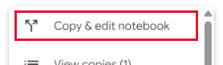
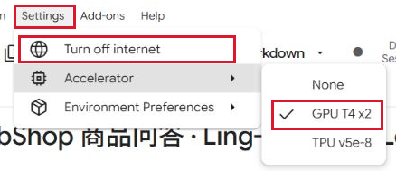
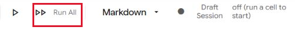
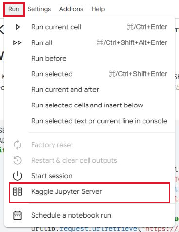
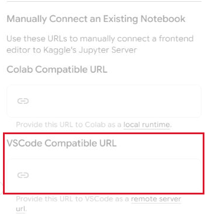

目录仅提供历史快照。实时价格、库存和可购买情况需要另行核对。
打开一键推理 Notebook ↗，选择 Copy & Edit，再点 Run All。模型就绪后，粘贴 VSCode Compatible URL。
打开 WebShop Ling-3.0-tiny 一键推理 Notebook ↗，点 Copy & Edit。如果右上角显示 Edit，从旁边的 ⋮ 选择 Copy & edit notebook。

如果连接时提示会话版本过旧，在自己的 Kaggle 副本里导入项目中的 kaggle/webshop-ling-inference.ipynb，再运行全部单元。
kaggle/webshop-ling-inference.ipynb
在自己的副本中打开 Settings。确保显示的是Turn Off Internet (若显示Turn On Internet，则需点击切换成Turn Off Internet），并在 Accelerator 选一个可用的 GPU，例如 GPU T4 x2。

直接点工具栏上的 Run All。Notebook 会自动读取正式 LoRA 权重并启动推理。等待输出 WebShop LoRA 已就绪。

保持 Kaggle 会话运行，打开 Run → Kaggle Jupyter Server。在 Manually Connect 找到 VSCode Compatible URL 并复制。回到问答台，粘贴到 Kaggle 会话地址，点击 连接。

